线段和角，它们都是轴对称图形吗？
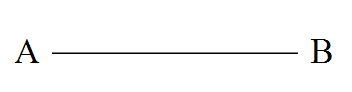
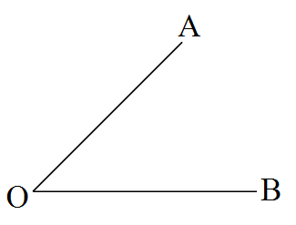
如图9.1.4，在半透明纸上画出线段 \(AB\)，对折线段 \(AB\)，使点 \(A\) 与点 \(B\) 重合，在折痕上任取两点 \(P\)、\(Q\)，然后用直尺画出折痕 \(PQ\)，直线 \(PQ\) 与线段 \(AB\) 相交于点 \(O\)。对折后，线段 \(OA\) 与 \(OB\) 是否重合？\(\angle POA\) 与 \(\angle POB\) 是否重合？你能说明直线 \(PQ\) 与线段 \(AB\) 的关系吗？
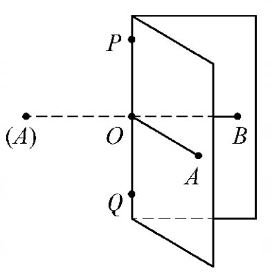
\(OA = OB\)，\(\angle POA = \angle POB = 90^\circ\)。直线 \(PQ\) 是线段 \(AB\) 的垂直平分线。
我们已经能利用尺规作图，作一条线段等于已知线段，作一个角等于已知角，那么如何作出已知线段的垂直平分线，即对称轴呢？
在上页的“试一试”中，我们发现，将线段 \(AB\) 对折，左、右两半完全重合，此时线段 \(PA\) 与 \(PB\) 重合，\(QA\) 与 \(QB\) 重合，即 \(PA = PB\)，\(QA = QB\)。
于是我们想到，分别以点 \(A\)、\(B\) 为圆心，以同样长为半径作弧，两弧的交点即为垂直平分线上的两点 \(P\) 与 \(Q\)。
由此，你能发现利用尺规作图作线段垂直平分线的方法吗？
如图9.1.5，已知线段 \(AB\)，试利用尺规作图，按下列作法准确地作出线段 \(AB\) 的垂直平分线。
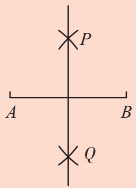
直线 \(PQ\) 就是所要求作的线段 \(AB\) 的垂直平分线。
由作图可知 \(PA = PB\)，\(QA = QB\)，所以 \(P\)、\(Q\) 都在线段 \(AB\) 的垂直平分线上，两点确定一条直线。
如图9.1.6，在半透明纸上画出 \(\angle AOB\)，对折 \(\angle AOB\)，使角的两边完全重合，然后在折痕（角的内部）上任取一点 \(P\)，用直尺画出折痕 \(OP\)，显然射线 \(OP\) 是该角的平分线，看看直线 \(OP\) 与 \(\angle AOB\) 是什么关系。
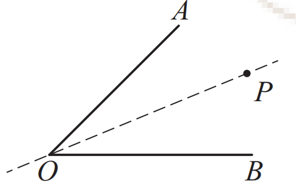
角是轴对称图形，其对称轴是这个角的平分线所在的直线。
我们已经能利用尺规作图作出已知线段的垂直平分线，那么如何作出已知角的平分线，从而得到已知角的对称轴呢？
如图9.1.7，已知 \(\angle AOB\)，试利用尺规作图，按下列作法准确地作出 \(\angle AOB\) 的平分线。
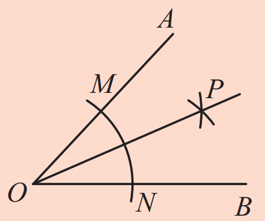
射线 \(OP\) 就是所要求作的 \(\angle AOB\) 的平分线。
由作图可知 \(OM = ON\)，\(PM = PN\)，所以 \(OP\) 是线段 \(MN\) 的垂直平分线，从而 \(OP\) 平分 \(\angle AOB\)。
如图9.1.8，两个方格图内的图形都是轴对称图形，请作出它们的对称轴。
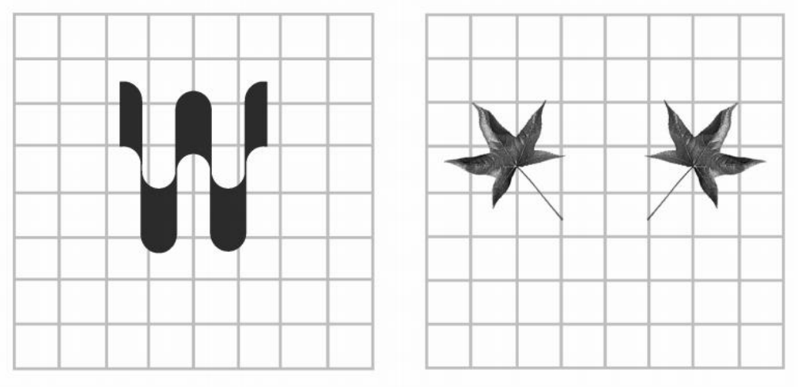
做一做
如图9.1.9，点 \(A\) 和点 \(A'\) 关于某条直线成轴对称，你能作出这条直线吗？
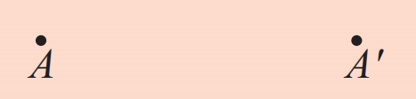
如图9.1.10，我们只要连结点 \(A\) 和点 \(A'\)，作出线段 \(AA'\) 的垂直平分线 \(l\)，直线 \(l\) 就是点 \(A\) 和点 \(A'\) 的对称轴。
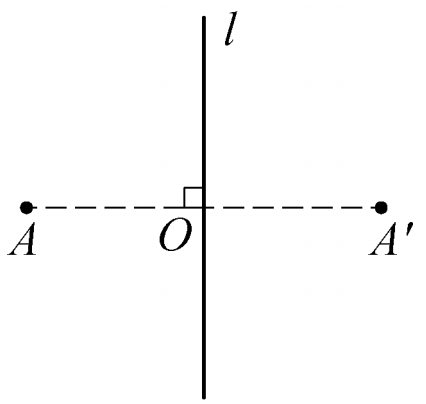
1. 平面上的两条相交直线是轴对称图形吗？如果是，它有几条对称轴？作图试试看。
是轴对称图形，有2条对称轴（两条角平分线所在的直线）。
2. 把一张正方形纸对折两次，然后分别剪出下列图形。
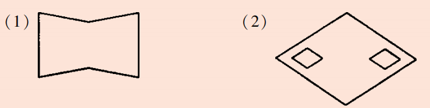
3. 图中的一些虚线，哪些是图形的对称轴，哪些不是？
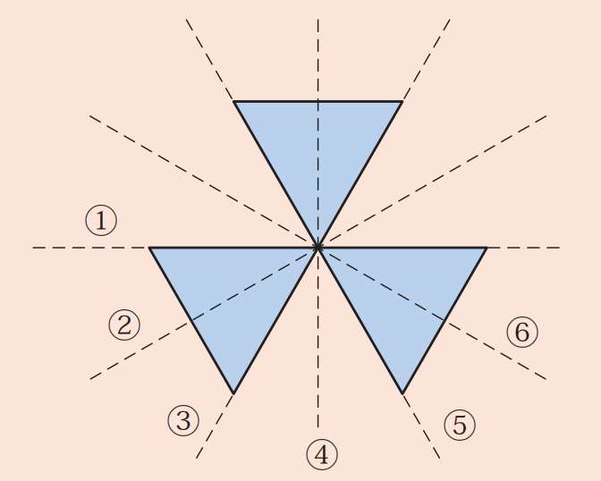
4. 如图，已知△ABC，利用尺规作图作出△ABC的边BC上的中线。
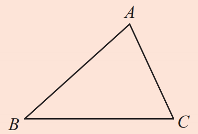
先作BC的垂直平分线，找到BC中点，再连接A与中点。
5. 如图，已知△ABC，利用尺规作图作出△ABC的平分线。（应为∠A的平分线）
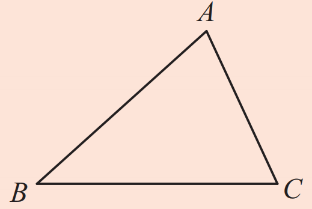
以A为圆心作弧交两边于两点，再分别以这两点为圆心作弧交于一点，连接A与该点。
转化思想： 将对称轴的寻找转化为作垂直平分线。
操作验证： 通过折叠、尺规作图验证图形的对称性。
模型观念： 垂直平分线和角平分线是重要的几何模型。